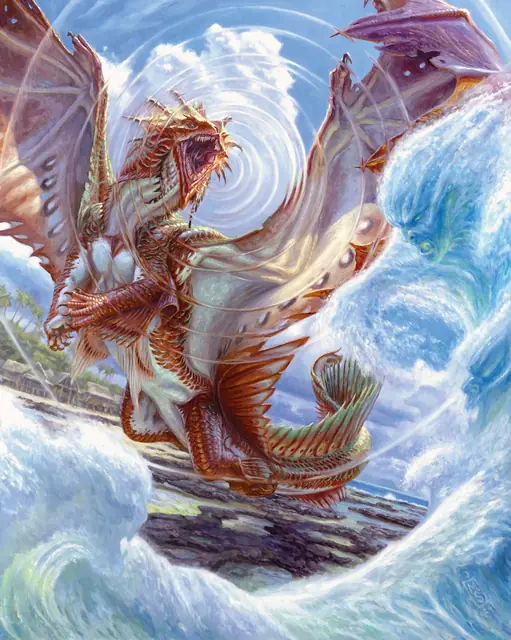

Древний бронзовый дракон
Ancient Bronze Dragon
Громадный Дракон (Металлический), Принципиальный Добрый

Класс Защиты 22 Инициатива +14 (24)
Хиты 444 (24к20 + 192)
Скорость 40 футов, Плавания 40 футов, Полёта 80 футов
| мод | спас | ||
|---|---|---|---|
| СИЛ | 29 | +9 | +9 |
| ЛОВ | 10 | +0 | +7 |
| ТЕЛ | 27 | +8 | +8 |
| мод | спас | ||
|---|---|---|---|
| ИНТ | 18 | +4 | +4 |
| МДР | 17 | +3 | +10 |
| ХАР | 25 | +7 | +7 |
Иммунитеты Электричество
Чувства Тёмное зрение 120 футов, пассивное Восприятие 27, Слепое зрение 60 футов
Языки Общий, Драконий
Опасность 22 (41 000 опыта или 50 000 опыта в Логове; БВ +7)
Особенности
Амфибия. Дракон может дышать как воздухом, так и под водой.
Легендарное сопротивление (4/день, или 5/день в Логове). Если дракон проваливает спасбросок, он вместо этого может в нём преуспеть.
Действия
Мультиатака. Дракон совершает три атаки Раздиранием. Он может заменить одну из этих атак использованием (А) Отторгающего дыхания или (Б) Сотворения заклинаний (Направляющий снаряд, версия 2-го уровня).
Раздирание. Бросок рукопашной атаки: +16, досягаемость 15 фт. Попадание: 18 (2к8 + 9) Рубящего урона плюс 9 (2к8) урона Электричеством.
Дыхание молнии (Перезарядка 5–6). Спасбросок Ловкости: Сл 23, каждое существо в Линии длиной 120 футов и шириной 10 футов. Провал: 82 (15к10) урона Электричеством. Успех: Только половина урона.
Отторгающее дыхание. Спасбросок Силы: Сл 23, каждое существо в 30-футовом Конусе. Провал: Цель отталкивается по прямой от дракона на расстояние вплоть до 60 футов и Опрокидывается.
Сотворение заклинаний. Дракон сотворяет одно из следующих заклинаний, не нуждаясь в Материальных компонентах (заклинательная характеристика — Харизма, Сл спасброска заклинаний 22, +14 к попаданию атак заклинаний):
Неограниченно: Направляющий снаряд, версия 2-го уровня, Обнаружение магии, Преображение, Временных хитов, Концентрации, Временные хиты, Разговор с животными, Чудотворство
1/день каждое: Власть над водами, Наблюдение, Обнаружение мыслей, Подводное дыхание
Легендарные действия
У этого существа есть 3 использования Легендарных действий (или 4 использования в его Логове); оно может немедленно после окончания хода другого существа потратить одно использование, чтобы совершить одно из следующих действий. Существо восполняет все потраченные использования в начале каждого своего хода.
Направляющий свет. Дракон использует Сотворение заклинаний (Направляющий снаряд, версия 2-го уровня).
Наскок. Дракон перемещается на расстояние вплоть до половины своей Скорости и совершает одну атаку Раздиранием.
Удар грома. Спасбросок Телосложения: Сл 22, каждое существо в 20-футовой Сфере с центром в точке, видимой драконом в 120 футах. Провал: 13 (3к8) урона Звуком, и цель Оглушена до начала своего следующего хода.
Бонус мастерства +7
Среда обитания Прибрежье
Сокровища Инструментальные
Бронзовые драконы
Драконы развития и защиты
В местах, где обитают бронзовые драконы, происходят чудеса. Эти металлические драконы отличаются как воображением, так и рассудительностью; они и сами стремятся к величию, и помогают другим реализовать свой потенциал. Их цель — охранять полезные идеи и изобретения, будь то наследие исчезнувших цивилизаций или новые открытия, и делать эти достижения доступными для всех. Когда дело касается недолго живущих недолго существ, бронзовые драконы стараются завоевать их доверие с помощью бесед и советов, однако они всегда готовы вступить в сражение со злодеями, которые мешают другим раскрыть свой потенциал.
Этих драконов привлекает сила и бескрайние просторы морей, и они часто устраивают свои логова в живописных уголках природы или поселениях, которые стремятся защитить. В своих жилищах бронзовые драконы собирают вещи, которые, по их мнению, могут оказаться полезными в будущем. Они также спасают потерянные в море сокровища, возвращают утраченное имущество и поднимают на поверхность затонувшие корабли.
Со временем блестящая чешуя древних бронзовых драконов покрывается эффектной патиной.
Они делают всё возможное, чтобы защитить от опасностей целые регионы, континенты и даже планеты. Эти драконы ищут способы борьбы с планарными катастрофами и мультивселенскими опасностями, а также противостоят злу могущественных цветных драконов.
Логова бронзовых драконов
Бронзовые драконы предпочитают жить у моря или под его волнами.
Местность, в которой находится логово взрослого или древнего бронзового дракона, изменяется из-за его присутствия, создавая следующие эффекты:
• Поверхностные течения. Существа без Скорости плавания не тратят дополнительное перемещения, пока плывут в пределах 1 мили от логова.
• Солнце и бури. Пока дракон находится в логове, он может творить заклинание Власть над погодой, не нуждаясь в Материальных компонентах (заклинательная характеристика — та же, что для его действия Сотворение заклинаний). При сотворении заклинания таким образом дракон может управлять погодой в пределах 1 мили от своего логова, находясь как внутри него, так и снаружи.
Если дракон умирает или перемещает своё логово в другое место, все эти эффекты мгновенно исчезают.